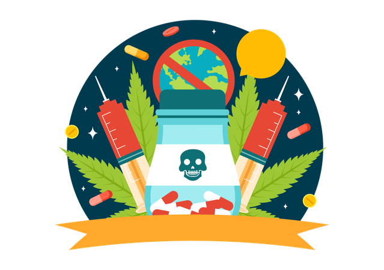
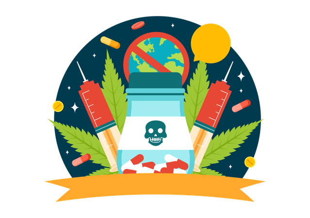

Las drogas y su clasificación
Depresores:
Suprimen, inhiben o reducen algunos aspectos de la actividad del Sistema Nervioso Central (SNC).• Síntomas de intoxicación: confusión, habla distorsionada, mareos, sequedad en la boca, problemas motrices y de memoria.
• Las principales sustancias depresoras del SNC son medicamentos sedantes y opiáceos.
• Algunos ejemplos son el alcohol, la cannabis, los analgésicos, las benzodiacepinas, los opiáceos y sus análogos sintéticos como el fentanilo.
Estimulantes:
Activan o incrementan la actividad del SNC.• Síntomas: aumento del ritmo cardiaco, temperatura y presión arterial; sensación de energía y alerta.
• Ejemplos: cafeína, nicotina, cocaína, metanfetamina.
Alucinógenos:
Inducen alteraciones en la percepción y el pensamiento.• Síntomas: ilusiones visuales, euforia o cambios de ánimo, taquicardia.
• Ejemplos: LSD, psilocibina, mescalina, peyote.
Fármacos de uso médico:
Afectan directamente el SNC. Deben usarse solo bajo receta médica.• Ejemplos: ansiolíticos (clonazepam), antidepresivos (fluoxetina), antipsicóticos (haloperidol).
 
